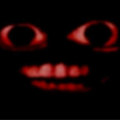
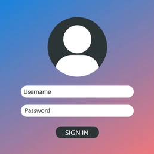
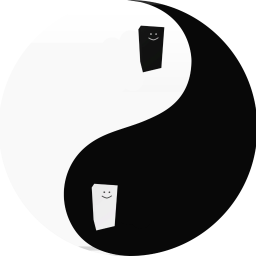

Group Directory

Les Bannis
Les Bannis was a griefing group inspired by La Rivia.

Ignation
Ignation accomplished many things such as figuring out how to send chat messages globally, and finding many RemoteEvent backdoors in modkits such as Progears, Pets, and Protil Economy.
In late January 2026, Ignation managed to get a backdoor into the game Build Island and gave their members HD Admin ranks in-game. Along with that, they also wiped a bunch of saves and banned multiple players.
ORCID
ORCID is one of the most notorious Build Island griefing groups. ORCID had many griefing saves on the Build Island popular page such as Server Crashers, Memory Eaters, and Teleport Traps.

Noctis Union
After Ignation disassembled in early June, Blackfire made a new griefing group called Noctis. Noctis started by hosting recruitment games where they stated their plans to destroy Build Island, earning them ~20 members in a week. They eventually got a "McDonalds" save onto the popular page which contained a backdoor, allowing members to gain rank 5 in servers and generate Robux via gamepass prompts.

DICRO
A private group formed by Blackfire and three loyal members after Noctis. DICRO focused on private NSFW server-hosting. Their activities eventually led to decals being permanently disabled for certain games, though they continued to use texture and mesh blocks as a counter-measure.

ARCID
The Arcidmen hosted games featuring bypassed 18+ decals.